The Samnites
2026-10-02 · jottel

Hello everyone, and welcome to our new Italic Developer Diary. Today, we present the Samnites, one of the most famous Italic peoples. They are best known for the three wars they fought against Rome: the First Samnite War (343–341 BC), the Second Samnite War (326–304 BC), and the Third Samnite War (298–290 BC). They later renewed their resistance by joining the Tarentines and Pyrrhos of Epeiros in the war against Rome (281–272 BC), and some Samnites joined Hannibal Barca after the Battle of Cannae in 216 BC and remained on his side until 201 BC, when their territory was confiscated by the Roman state. Finally, they took part in the Social War (91–89 BC). Because no lasting peace was concluded with them, they subsequently joined Marius the Younger (110 BC – 82 BC) against Sulla (138–78 BC) in the Civil War (83-82 BC) and were slaughtered for doing so. You can see why they make such a compelling faction. Since the surviving narratives were written mainly from a Roman perspective, the Samnites are usually portrayed as opponents of Roman rule, either positively as noble adversaries or negatively as uncivilised tribes. This image is reinforced by the depiction of them as mountain peoples with a poor subsistence and pastoral economy that could barely support an overpopulated countryside. The Samnites are therefore framed as hardy warriors who raided the valleys of Italy and inevitably clashed with Rome. This interpretation was partly adopted by E. T. Salmon in Samnium and the Samnites (1967), the first major modern study devoted specifically to this Italic people. His analysis of their history, economy, and culture was unmatched at the time and remains fundamental to later scholarship, but it also reinforced several tropes that conflict with details in the ancient sources. Research since Salmon has substantially revised and expanded many of his conclusions.
But first, let’s examine Samnite history as presented by our sources. The Samnites spoke Oscan, an Italic language related to Latin and to the Sabellic languages of peoples such as the Sabines, Marsi, Picentes and, to a degree, Umbrians. Oscan survives in several hundred, usually brief inscriptions: laws, treaties, religious texts, gravestones, building records, graffiti and coins (McDonald, Italy before Rome (2022), p. 101-103). Strabo traced the Samnites to the Sabines, an “extremely ancient” and autochthonous people of the central Apennines who played a major role in early Roman history (Towards the end of his life, Romulus, the founder of the city, shared his kingship over Rome with the Sabine king Titus Tatius). During a war with the Umbrians (Ombrici), the Sabines vowed the year’s produce to the gods. When famine followed their victory, they also dedicated that year’s children to Mars. On reaching adulthood, these children departed as colonists behind a sacred bull, a rite called the “sacred spring” or “ver sacrum” (Plin. NH III.110; Dion. Hal. I.16.2-4, Strab. V.4.12). They entered the land of the Opici, displaced them and settled where the bull lay down, sacrificing it to Mars for his guidance (Strab. V.4.12). Strabo derived “Sabelli” from their Sabine ancestry, “little Sabines” while the Greeks called them “Saunitai”. He dismissed a claimed Spartan origin as Tarentine propaganda created during Taras’ desperate search for allies against Rome (Strab. V.4.12). The Hirpini were sometimes listed separately but remained one of the four major Samnite tribes, alongside the Pentri, Carracini and Caudini. Their name recalled the wolf followed during their own sacred spring, “hirpus” meaning “wolf” in Oscan.
The Samnites made early expeditions into Latium, ravaged Campania and even conquered it in the 5th century BC, including Capua in 423 BC (Strab. V.4.11; Liv. IV.37.1-2). The Lucanians split from them and took the lands near the Greek cities on the southern Italic coast, most notably Poseidonia (Paestum), and the Bruttians in turn split from the Lucanians, settling in the “toe” of Italy. After their numerous wars and eventually revolts against Rome, it was Sulla who finally reduced their power for good during the Social War (91-89 BC and continued Samnite involvement until 82 BC). As he defeated them, he made sure to slaughter them during the battle itself and then executed all the prisoners three days later, expressing that no Roman could ever live in peace as long as the Samnites held together as separate people (Strab. V. 4.11). In Strabo’s time, the cities (Bovianum, Aeernia etc.) were reduced to mere villages (V.4.11). Thus, the 1st century BC usually marks the end of an independent Oscan Samnite culture. The most detailed account of the three major wars between Rome and the Samnites comes from Livy. Recounting every event would take us too far afield, but several aspects of Samnite warfare deserve attention. The Samnites are often credited with an irregular style of warfare suited to their mountainous homeland, relying on guerrilla tactics and avoiding direct confrontation in pitched battles. E. T. Salmon strongly advanced this interpretation, which gained widespread acceptance in historical scholarship and became even more common in magazines, books, and YouTube videos. Some evidence supports it, but it does not explain the full range of Samnite military activity. On the surface there is an argument for that to be made:
Roman sources assert that they adopted Samnite arms or fighting style in favour of their old Etruscan-style phalanges and hoplite-like equipment. The Ineditum Vaticanum (Arnim (1892), in: Hermes 27) has a Roman saying: “But when we found ourselves at war with the Samnites we armed ourselves with their shields and pila [*thureois kai hyssois hoplysthentes*], and fought against them on horseback“ And similarly in Athenaios VI.273: “And from the Samnites they learnt the use of the shield [*thureou*], and from the Iberians the use of the javelin [*gaison*].” Or Sallust Catil. 51.38: “They took their offensive and defensive weapons from the Samnites [*Arma atque tela militaria ab Samnitibus*].” And lastly Eusebius, Preparatio Evangelica 10.6: “…and Itanus, who was a Samnite, fashioned the long shield [*thureon*].” Contrasting the maniples and scutum/thureos shield in the Apennine mountains with the “phalanx” and Argive aspides of the Etruscans plains, one could easily conclude that Rome adapted these items and tactics from fighting Samnite guerillas. This, however, not only undermines the choice of Samnites to pick and fight regular pitched battles but also the ability to win them. It further ignores the incredible expansion of the Samnite tribes in the course of the 5th and 4th century BC Italy, only really rivalled by Rome. The way Rome gets drawn into the Samnite Wars is often (in their portrayal) by intervention in a different theatre of war. This also reveals, however, how involved the Samnites were in different locations in Italy.
At several points, the Samnites operated from or against places explicitly said to have belonged to other peoples, including the Volsci (Fregella: Liv. VIII.23.6; Sora: X.1.1), Etruscan Campanians (Capua: IV.37.1), and Apulians (VIII.25.3). Such expansion required an ability to assault fortifications, which they also demonstrated against Rome at Plistica in 315 BC (Liv. IX.22) and at Sora and Calatia in 306 BC (Liv. IX.43; Diod. XX.80). Although they trapped a Roman army in the famous ambush at the Caudine Forks (321 BC) and attempted similar manoeuvres on several occasions, they also won pitched battles. Their manpower was rivalled only by Rome. Roman reports of victories over tens of thousands of Samnites may be exaggerated, but they must preserve some genuine indication of the resources required to fight Rome intermittently for more than half a century. Prachner (Bemerkungen zu den erbeuteten ‘signa militaria’ der Samnitenkriege (1994)) concludes that the reported numbers of captured Samnites and standards present an internally consistent picture of Samnite army and cohort sizes. He also argues that these large figures are plausible if Samnite armies were intended to defeat Roman consular forces, which often numbered around 20.000 men. Polybios’ report on the census of 225 BC likewise lists the Samnites among the most numerous peoples of Italy: 70.000 infantry and 7.000 cavalry, second only to the “Latins,” with 80.000 infantry and 5.000 cavalry (Polyb. II.24.10).
Pitched battles include Mount Gaurus in 343 BC (Liv. 7.33.3-17), where the lines were evenly matched (7.33.5) until M. Valerius Corvus dismounted his cavalry to reinforce the infantry. The Samnites then failed to ambush Cornelius Cossus (7.34-35) and were defeated at Suessula while assaulting a Roman camp (7.37). The Second Samnite War opened with field battles at Imbrinium in 324 BC under Q. Fabius Maximus Rullianius (Liv. 8.30.4-6) and between L. Papirius Cursor and the Samnites (8.36). That year, the Samnites attacked A. Cornelius Arvina’s marching column, but formed a regular battle line when the Romans formed up to face them (Liv. 8.38.8-9); after a long fight, they routed (8.39.4-19). Rome most famously suffered a defeat at the Caudine Forks, where the captured Roman army with both consuls had to pass unarmed beneath the yoke (Liv. 9.4-6). Rome answered in kind: L. Papirius Cursor had the Samnites pass under a yoke after taking Luceria in 320 BC (Liv. 9.15.7-8); Q. Fabius did likewise at Allifae (9.42.7-8, in 307 BC), and in 294 BC M. Atilius Regulus sent 7.800 Samnites beneath it. The “Caudine Forks” continued being referenced for the rest of the Roman Republic (Liv. 9.16.2; 9.38.4; 22.14; 25.6). They were definitely some sour losers. Regular Samnite victories also included Lautulae in 315 BC (Livy 9.23.1–6; Diod. Sic. 19.72.5–8), Luceria in 294 BC (Livy 10.35.1–36.15; Frontinus, Strat. 2.8.11; Zonar. 8.1), and the Cranita Hills (277 BC, Zonar. 8.6), although Rome won most recorded battles, most notably the decicive battle at Sentinum in 295 BC, against a Gallic-Samnite alliance (Polyb. 2.19.6-7; Liv. 10.27.8-29.20).
The Samnites’ last hurrah began when they, the Lucanians and the Bruttians joined Taras and Pyrrhos of Epeiros (319/318–272 BC). At Heraclea (280 BC), the Samnite “phalanx […] equipped with oblong shields” [*Sauniton thyreaphoro phalangi*] stood beside the Aitolians, Akarnanians and Athamanaians (Dion. Hal. XX.1.5). Although Pyrrhos dominates the sources, the rebellious southern Italic tribes and cities were Rome’s true prize: between 282 and 272 BC, ten triumphs celebrated victories over Samnites, Lucanians and Bruttians, but only one over Pyrrhos. Rome divided Samnite territory by annexing the ager Taurasinus and founding the Latin colony of Beneventum (268 BC), while reinforcing Luceria (314 BC) (Blösel, Die Römische Republik. (2015), p. 77). In the Second Punic War (218–201 BC), all Samnites except the Pentri around Bovianum were ready to revolt. The Pentrian Numerius Decimus aided Q. Fabius Maximus and M. Minucius Rufus in 217 BC, striking Hannibal’s army in the rear with 8.000 infantry and 500 horse (Liv. XXII.24). After the war, disloyal Samnites and Apulians lost territory to the Roman state (Liv. 31.4). During the Social War (91–89 BC), the Samnites were among the leaders of the struggle for citizenship and equal rights. The Pentrian commander C. Papius Mutilus minted silver coins naming him imperator and showing the Samnite bull attacking the Roman wolf (Tagliamonte, The Samnites, in: Farney; Bradley, The Peoples of Italy (2018), p. 424). In the ensuing Civil War, they sided with Marius but were crushed by Sulla at the Colline Gate in 82 BC. Sulla then brutally punished 8.000 prisoners, “mostly Samnites” (App. BC. 1.10.87).
The starting settlements of the Samnites, under Roman protection, include Bovianum and Compsa, the capitals of the Pentri and the Hirpini respectively, arguably the two biggest Samnite tribes of the 3rd century BC. The territory is cut apart by Roman ownership over Maleventum, which was renamed to its more famous name Beneventum in 268 BC, once it was made into a colony.
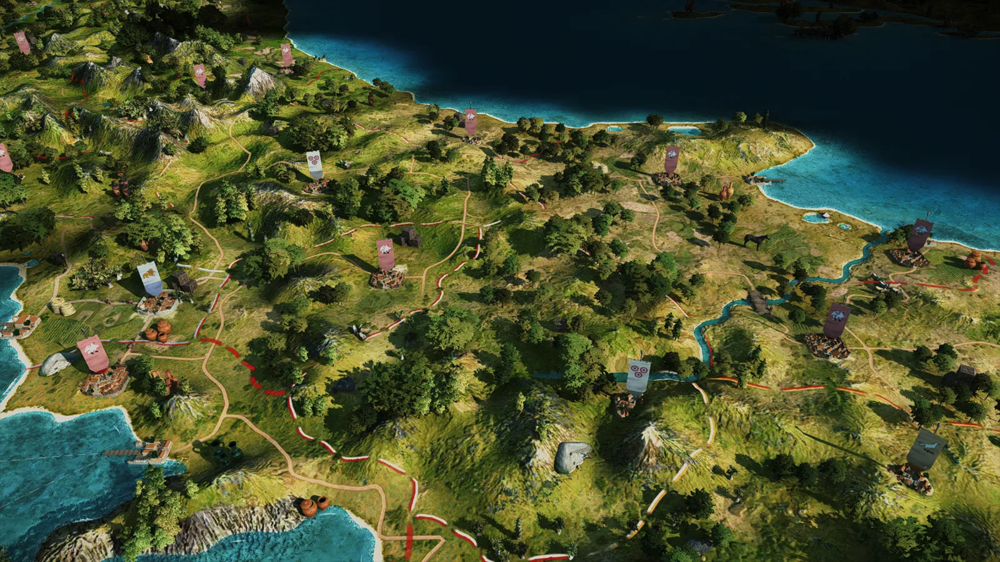
The faction symbol shows the famous Samnite triple disc cuirass. Its omnipresence in the archaeological record of Southern Italy, Paestan wall paintings and Campanian pottery depicting Samnites makes it into an iconic symbol for Samnite warriorhood. Roosters are prominently depicted in Oscan art, like on Paestan wall paintings, or the reverse of the coinage from Northern Campania, Cales, Suessa, or Horatius’ Oscan character Messius “Cicirrus” (“the rooster”) in his satires (I.52).
Now we will present to you the Samnite roster: Oscan Spearmen make up the levy of the Samnites. For the battle of Aquilonia, the Samnites levied 40.000 men, “any man within the military age who had not assembled on the captain-general's proclamation, or any one who had departed without permission, was devoted to Jupiter and his life forfeited.” (Liv. X.38.3) They obviously have the most basic equipment.
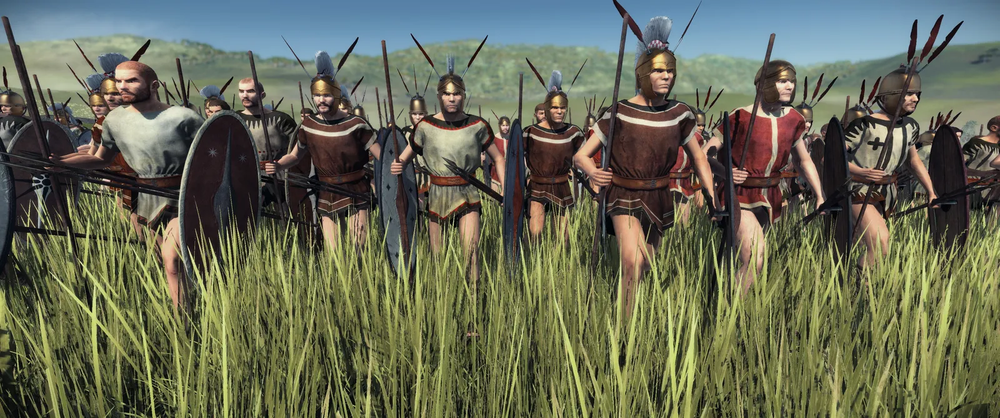
Oscan Javelinmen are armed with javelins and basic shields that Michael Burns in his 2006 study on Southern Italic weaponry called the “parasol” shield, often seen in the hands of lighter armed men.
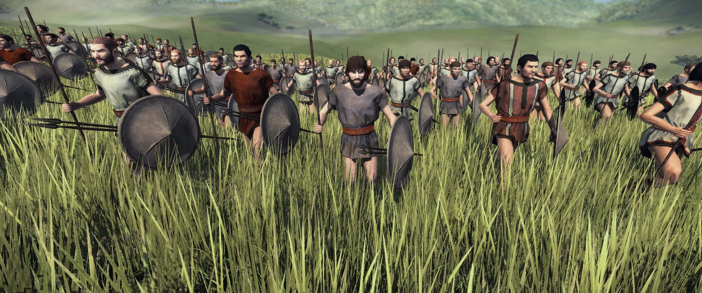
Samnite axemen are shown on one Campanian red-figure bell krater of the Libation painter, found at Montesarchio (ancient Caudium), tomb 1005, now in the Museo Archeologico Nazionale del Sannio Caudino, Montesarchio, inv. 165208
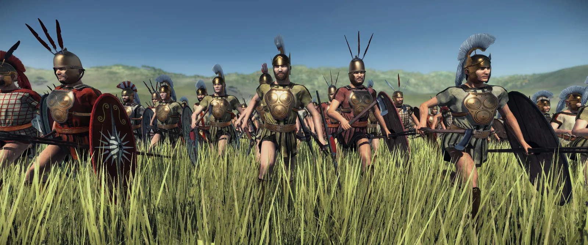
Samnites in the 3rd century BC were probably mainly armed as thureophoroi, as quoted from Dionysios of Halikarnassos above. Though depictions of Samnites with a Greek aspis shield are more numerous, the thureos was seen as the typical “Samnite shield” that the Romans adopted from them.
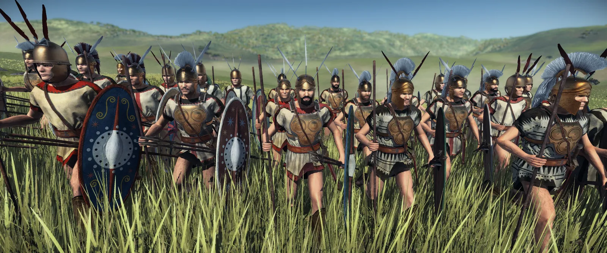
Samnite hoplites are very prominently depicted on Campanian pottery and Paestan wall paintings. The star symbol seems to be the most popular motif of their shields.
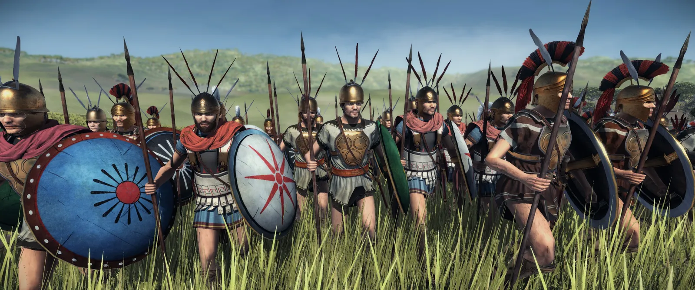
Oscan Light Cavalry is armed in a manner most commonly seen in Oscan depictions, especially showing returning warriors, carrying loot on the tips of their javelins
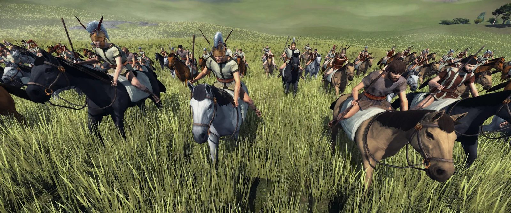
Oscan Cavalry is armed in the Tarentine way with javelins and Hellenistic style cavalry shields. These can be seen on various depictions from Southern Italy, and cavalry from Oscan-speaking areas definitely would have adopted them, too, as seen in a wall painting from Nola, shown in the last DD.
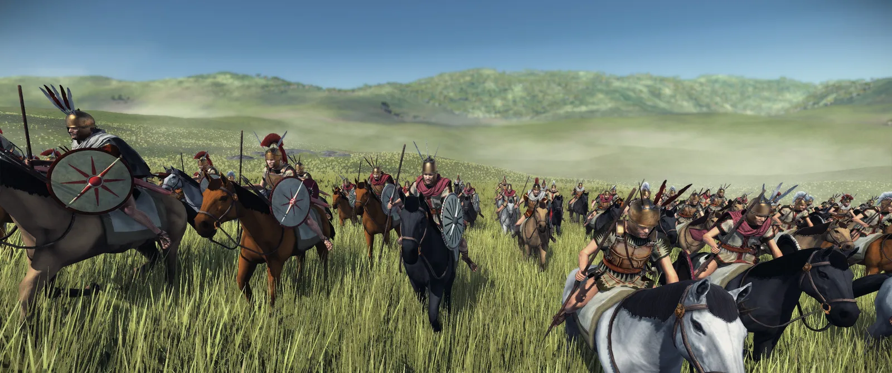
And finally, some action screenshots:
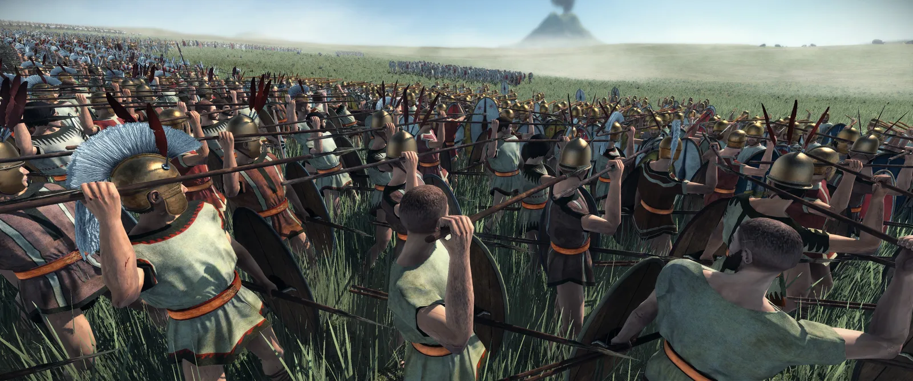
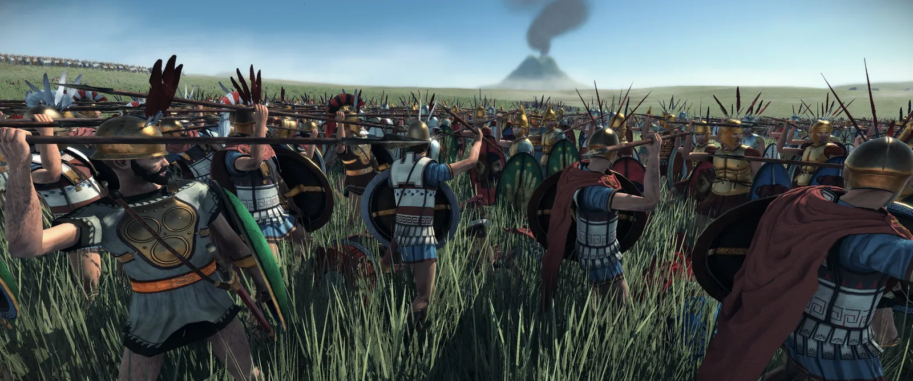
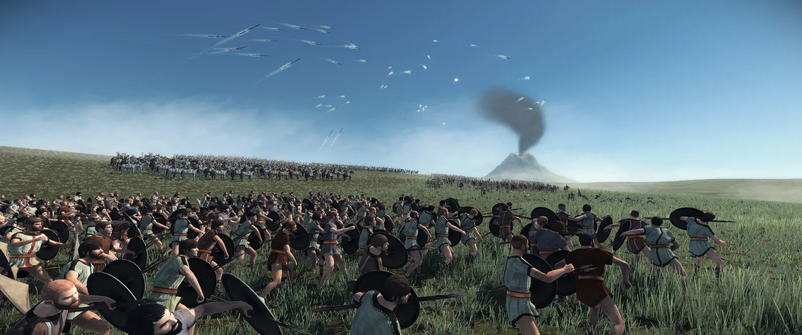
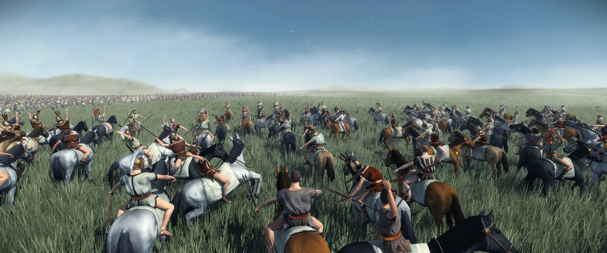
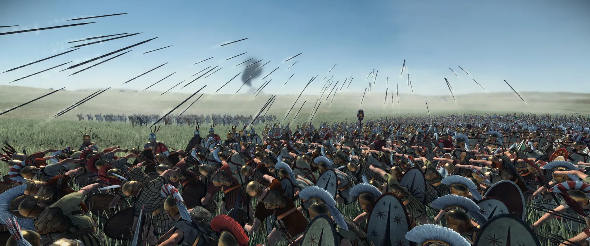
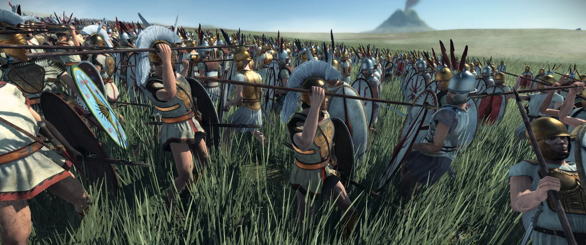
This concludes our Developer Diary for today! Discuss your thoughts and questions in a channel and see you next time!